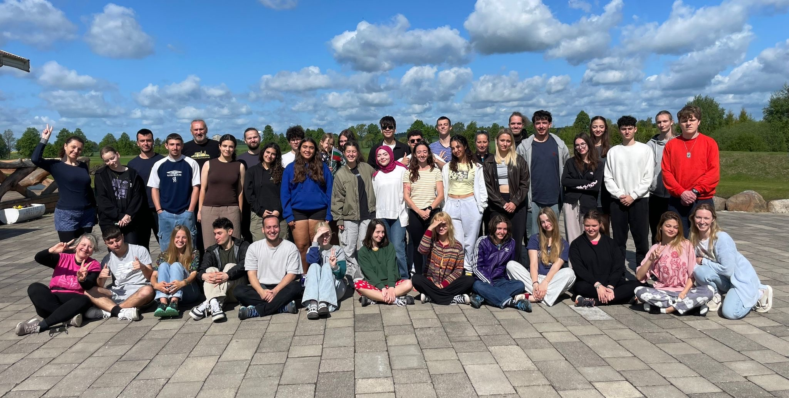
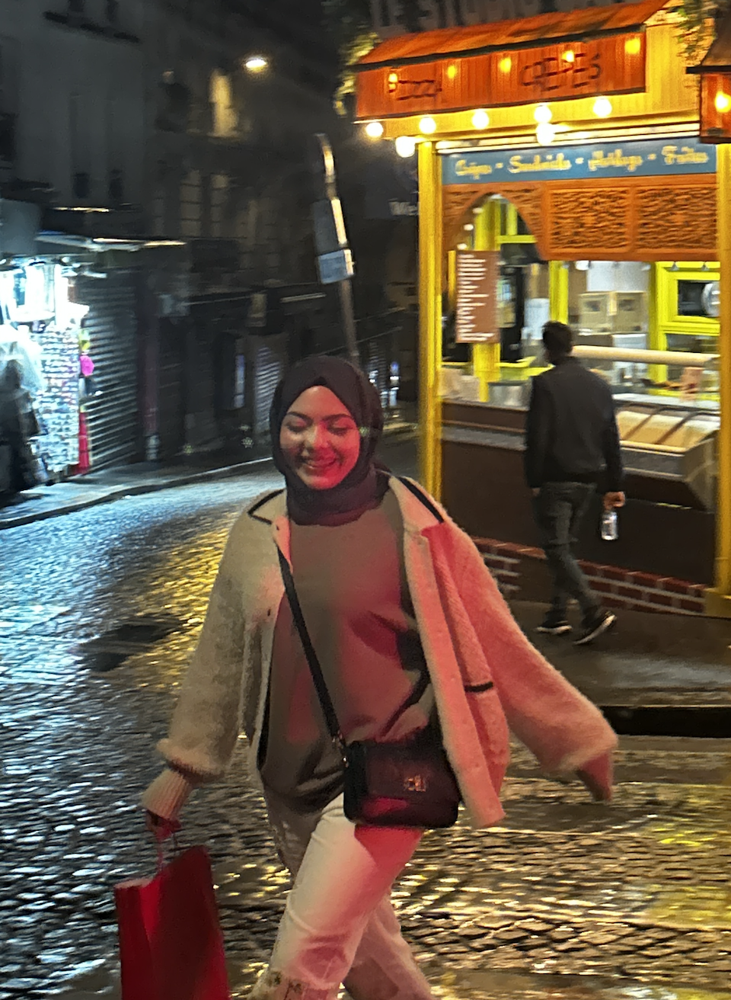
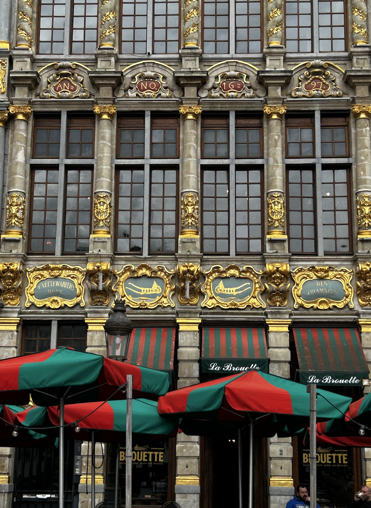
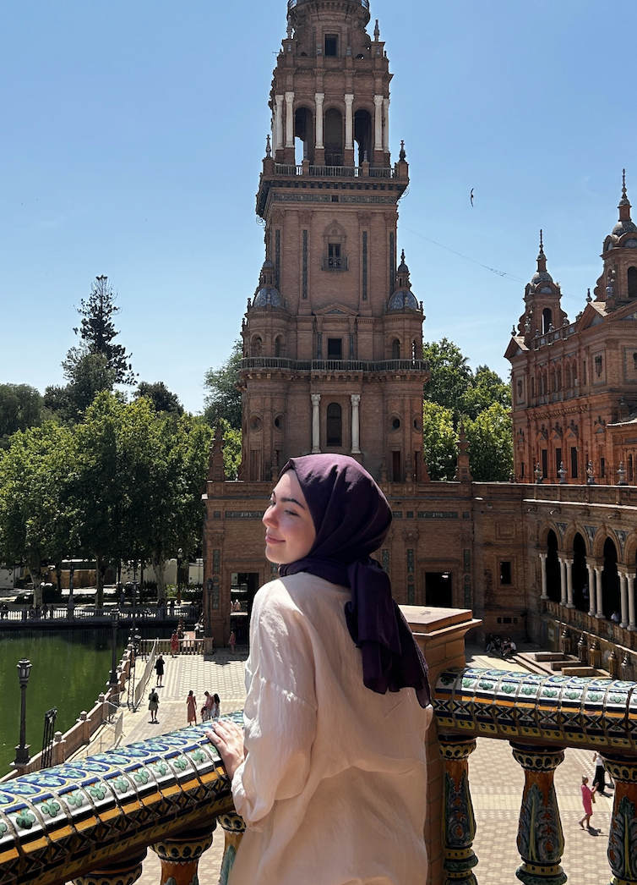
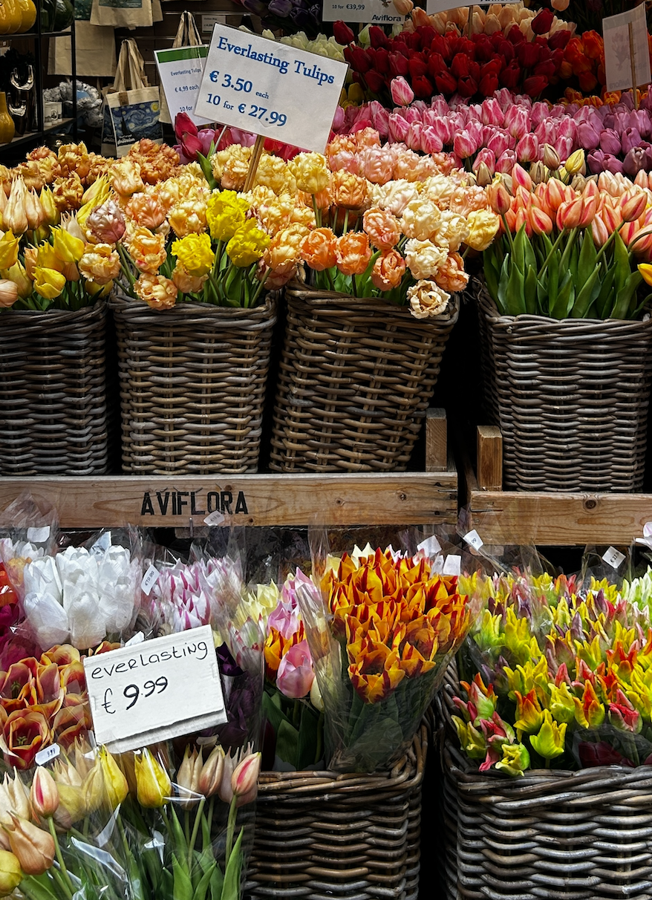

OH, WHO IS SHE?
NISANUR EREL – A passionate student and aspiring web developer. Exploring the world and programming, every step is a journey.
PROJECTS
- USE SPORT AS A TOOL MAKE THEIR LIVES REALLY COOL / TURKEY
- ECOPULSE / ROMANIA
- ECO FRIENDLY TRANSPORTATION IS A NEW FASHION / TURKEY
- BYE BYE BOREDOM / SLOVAKIA
- LEGACY OF THE SOIL / SPAIN
- THINK SHARP LIKE SHARK / LITHUANIA
- EMOTIONAL INTELLIGENCE: WHAT IS IT AND WHY IT CAN MAKE US HAPPY / ITALY
TRAVELS
|

PARIS | APRIL 2025 |

BRUSSELS | APRIL 20255 |

SEVILLA | JUNE 2025 |

AMSTERDAM | APRIL 2025 |
EXPLORE WITH ME

NISA
Nisanur Erel is a Computer Engineering student with a solid foundation in software development,
robotics, and hands-on technology projects. Currently pursuing her bachelor’s degree at Erzincan Binali
Yıldırım University, she has built solid experience in programming, embedded systems, and collaborative
engineering work through both academic studies and international programs.
Her passion for technology is complemented by significant international exposure. As an Erasmus Exchange
student at the University of León in Spain, Nisanur deepened her focus on Artificial Intelligence and
Networks while gaining enriching multicultural teamwork experience. In addition to this program, she has
participated in seven Erasmus projects and one Erasmus BIP across Spain, Italy, Turkey, Lithuania,
Slovakia, and Romania, often taking on leadership responsibilities during group activities. These
experiences nourished her communication skills and built up her ability to adapt and to collaborate
across diverse environments.
Before university, Nisanur graduated from Bayburt Science High
School with a nationwide placement in the top 0.6%, securing a strong grounding in advanced mathematics,
analytical reasoning, and scientific research. She also completed a decade-long gifted-student program
at the Science & Arts Center, where she worked on robotics, drone design, and scientific
experimentation, which helped lay the foundation for her future engineering interests.
Her
artistic talents were recognized with a Baksi Museum Scholarship, where her works were exhibited between
2016 and 2019. Nisanur has continued to develop her engineering skills through competitive and practical
work, including participating in Teknofest with an autonomous drone design and implementation
project.
Her interests span across robotics, hardware development, AI, and hands-on innovation,
supported by her qualities in teamwork, leadership, project management, and problem-solving.
Fluent in Turkish and English, with growing proficiency in Spanish, she is eager to contribute
to technology fields that blend creativity and engineering, and that aim for a tangible, real world
impact. Endowed with a passion for computer engineering and backed by a strong academic background,
Nisanur aims to take part in innovative projects, especially those that push beyond the boundaries of
robotics, intelligent systems, and human-centric technology design.